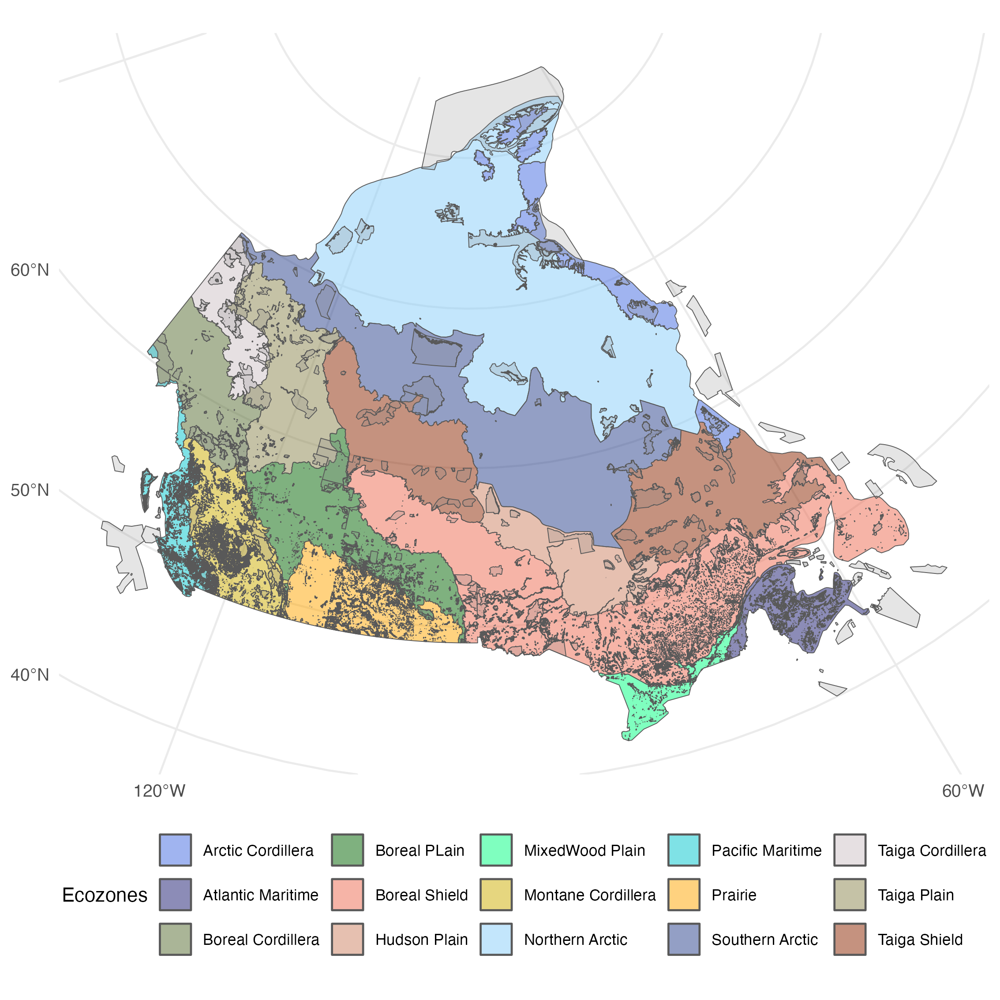
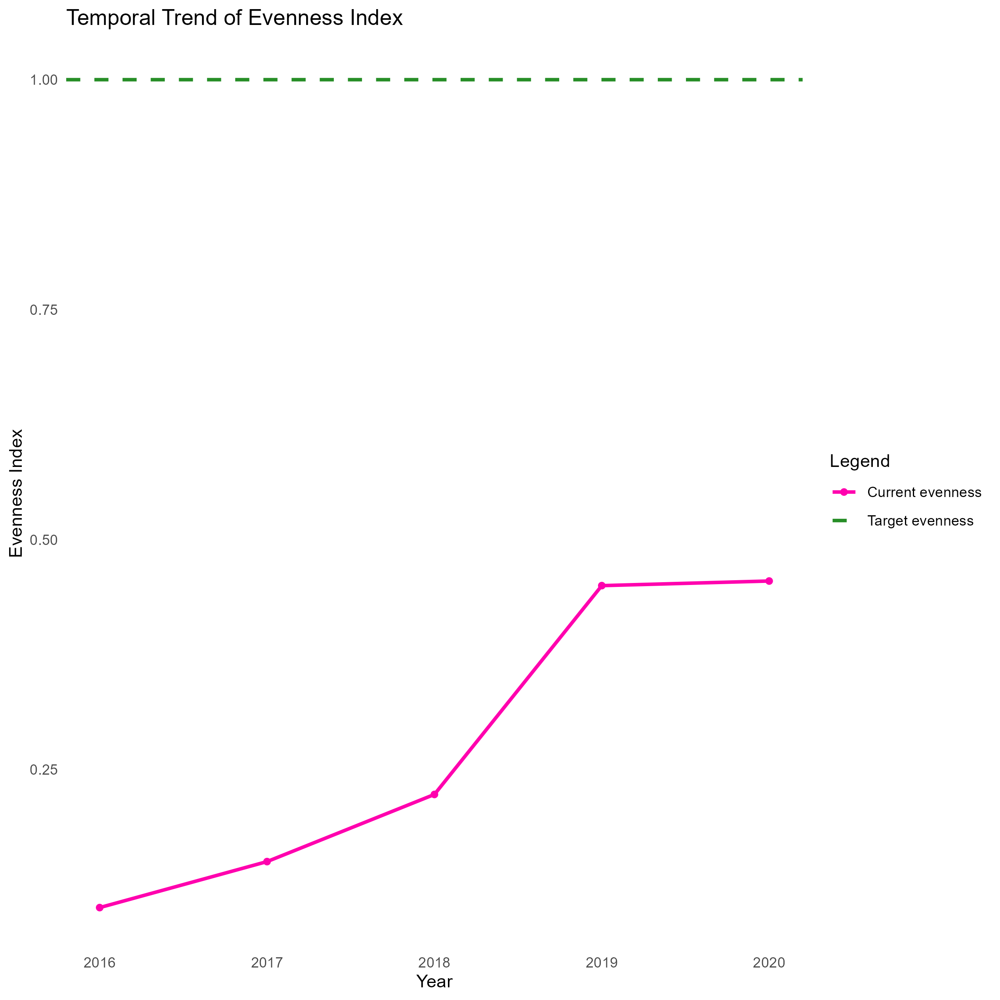

The Protected Habitat Eveness (PHE)
Kumming-Mtl Goal and target
Goal A: The integrity, connectivity and resilience of all ecosystems are maintained, enhanced, or restored, substantially increasing the area of natural ecosystems by 2050;
Human induced extinction of known threatened species is halted, and, by 2050, the extinction rate and risk of all species are reduced tenfold and the abundance of native wild species is increased to healthy and resilient levels;
The genetic diversity within populations of wild and domesticated species, is maintained, safeguarding their adaptive potential.
Target 3: Ensure and enable that by 2030 at least 30 per cent of terrestrial and inland water areas, and of marine and coastal areas, especially areas of particular importance for biodiversity and ecosystem functions and services, are effectively conserved and managed through ecologically representative, well-connected and equitably governed systems of protected areas and other effective area-based conservation measures, recognizing indigenous and traditional territories, where applicable, and integrated into wider landscapes, seascapes and the ocean, while ensuring that any sustainable use, where appropriate in such areas, is fully consistent with conservation outcomes, recognizing and respecting the rights of indigenous peoples and local communities, including over their traditional territories.
The Protected Habitat Eveness (PHE)
We developed an indicator that is complementary to the Coverage of protected areas and other effective area-based conservation measures. Our measure address the second part of the target 3 which state that the 30X30 target needs to protect areas that are ecologically representative for biodiversity by considering that varying ecological zone, and corresponding biodiversity, should be equally representative in the 30x30 target.
Scale
National: Evenness across Canada ecozone given that each one are characterize by varying landscape and biodiveristy.
Subnational: Bioclimatic domains of Qc. Province
Type of protected areas
Key definitions
Protected area: ‘A clearly defined geographical space, recognised, dedicated and managed, through legal or other effective means, to achieve the long-term conservation of nature with associated ecosystem services and cultural values.’ (Dudley et al., 2008).
Other effective area-based conservation measure: ‘a geographically defined area other than a Protected Area, which is governed and managed in ways that achieve positive and sustained long-term outcomes for the in situ conservation of biodiversity, with associated ecosystem functions and services and where applicable, cultural, spiritual, socio–economic, and other locally relevant values.’ (CBD, 2018).
Areas of particular importance for biodiversity: ‘sites that contain significant populations/extents of threatened or geographically restricted species or ecosystems, or that have significant ecological integrity or irreplaceability, significance for the maintenance of biological processes, or provide significant ecological connectivity to maintain populations of species’ (Plumptre et al 2024). Key Biodiversity Areas have been identified in all countries and represent the most comprehensive network of such sites, and are defined as sites “contributing significantly to the global persistence of biodiversity” (IUCN, 2016).
IUCN Categories
| no | def |
|---|---|
| I | Science or wilderness protection and Wilderness protection |
| II | Ecosystem protection & recreation, Conservation of specific natural features, Conservation through management intervention, Landscape/seascape conservation or recreation, Sustainable use of natural resources |
| III | KBA ? |
Workflow
Headline indicator: Protected Habitat Coverage (PHC) Complementary indicator: Protected Habitat Eveness / Protection d’Habitat égal (PHE)

Method
To calculate the PHE, we take the inverse of the Gini inequality index, which is a measure of the extent to which a quantity of interest (traditionally income per countries) is equal across geographical zone.
Here, our quantity of interest are the size of protected areas and the geographical units are ecozones or bioclimatic domains. However, the geographical zone can be any ecologically and jurisdictionally interesting type, like ecoregion, or province.
We have also adapted the index so it accepts proportions of protected areas within geographical zones, since our ecozones are of different size. This ensures that one unit increase in proportion in one region has the same weight as a unit increase in another. This works toward our goal of mapping an even distribution of protected areas across ecozones.
The Protected Habitat Evenness Index is calculated as:
\[ PHEI = 1 - G \]
\[ G = 1 - \frac{2 \sum_{i=1}^{n} i \cdot p_i}{n \sum_{i=1}^{n} p_i} - \frac{n + 1}{n} \]
Where n is the number of ecozones, and \(p_{i}\) is the proportion of protected area within the i ecozone’s total area
Interpretation: Here, we take the inverse of the Gini index, so that 0 maps to low evenness and 1 is a perfect evenness.
The data
Example of PHE Index over time
